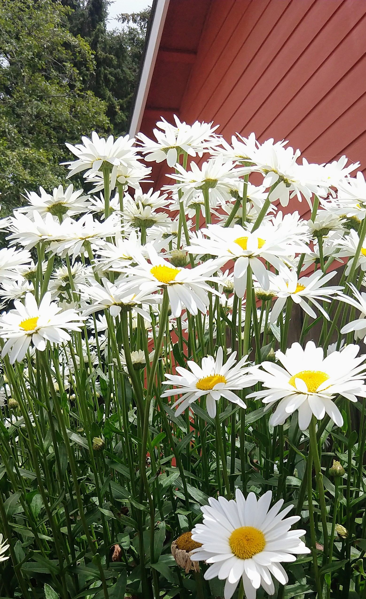
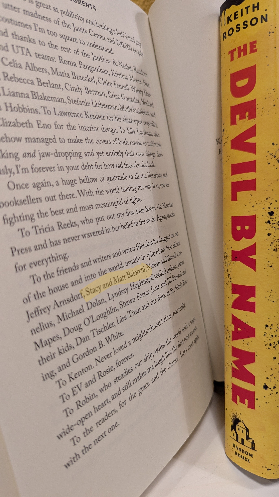
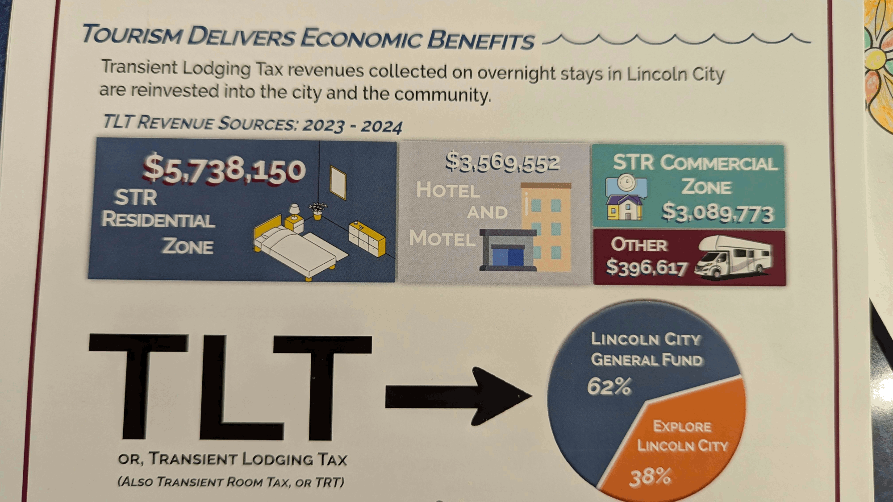

Ope...A Life
3
#ope

Any time you start thinking the world is a fair and just place, remember this picture. How a schlub like me ended up with an amazing, wonderful, beautiful, intelligent, fun person like this is proof it's an unfair universe/multiverse.
#ope
Stacy thought she'd celebrate the new year by doing the polar bear plunge thing. Except we live on the Oregon Coast, so it's cold and rainy and windy but not snowy or icy. It was held in the bay. The air temp was 41°F. The water temp was around 47°F. She, and a bunch of other folk, ran from the beach into the water. The seals stopped "sunning" themselves on the spit across the bay and swam over to see what the primates were up to. She's a fresh water gal, never been in saltwater before. When she dunked herself her mouth was open. Saltwater is grody. She had such a great time she went back in for a second round. Two friends did it with her. I and a husband of one of the others guarded the warm clothes and took lots of pics. It was an official kinda thing put on by the rec center. Over 400 people attended.
The rest of the day was spent snuggling in the big chair and watching old episodes of Due South. Good way to ring in the new year.
We went to Timberline Lodge for our 29th anniversary. Have to write it up. It will live here when I get it up.
#books
Finished Wild Massive by Scotto Moore.
Fun characters. Neat story. It's 500 pages. About 200 pages too many. Did some skimming. Don't feel I missed anything important. It's an immersive world and all that world building isn't always my thing. Wasn't my thing this time around.
Finished The Return by Rachel Harrison.
Great writing. Interesting monster. About 2/3rds of the way through I started skimming the interactions between the four friends. Too much repetition of the same frailties/insecurities/friends great/friends hurt.
Did not finish The 25th Hour by David Benioff.
Premise was interesting. Writing was pretty good. Way too much macho underworld bro code kinda stuff. Stopped reading on the 9th page.
#yard #pnw
Coast Guard helicopter out of Depoe Bay responding to emergencies up and down the coast. Happens frequently on weekends and holidays. Get a great view of it from the bedroom window.
There's another bar crossing a little further south, the Yaquina Bay Bar in Newport, that gets a bit dicey.
You can also go north up the coast. Coast Guard in Astoria. This rescue is in the Columbia River. This isn't the ocean. This is a river.
#mattifesto
Why I'm quitting the Washington Post
I've worked for the Washington Post since 2008 as an editorial cartoonist. I have had editorial feedback and productive conversations—and some differences—about cartoons I have submitted for publication, but in all that time I’ve never had a cartoon killed because of who or what I chose to aim my pen at. Until now.
The cartoon that was killed criticizes the billionaire tech and media chief executives who have been doing their best to curry favor with incoming President-elect Trump. There have been multiple articles recently about these men with lucrative government contracts and an interest in eliminating regulations making their way to Mar-a-lago. The group in the cartoon included Mark Zuckerberg/Facebook & Meta founder and CEO, Sam Altman/AI CEO, Patrick Soon-Shiong/LA Times publisher, the Walt Disney Company/ABC News, and Jeff Bezos/Washington Post owner.
#library
A patron told me that all people resemble flowers and I'm a daisy.
According to the Penn State Extension Master Gardener Program:
...the daisy conveys many meanings—innocence, simplicity, childlike joy and playfulness, happiness, good luck, new beginnings, loyal love, and purity. It is a flower given between friends to keep a secret; the daisy means "I'll never tell." Daisies are presented to new mothers, representing fertility and motherhood.
According to Roman mythology the daisy also symbolizes chastity, modesty, and transformation. This meaning is derived from the story of Vertumnus, the god of seasons who loved a nymph, Belides. He pursued her to the point where she transformed herself into a daisy to escape his unwanted attention. The daisy's Latin name "Bellis" or "Bellus" is derived from Belides and means pretty. The species name "perennis" means lasting through the year.
Although admired for its many positive attributes, Bellis perennis, has a mixed reputation. Depending on personal experience, it can be an attractive low-spreading ornamental flower enhancing borders, rock gardens or containers. By contrast, it may be a common, persistent weed of lawns, fields and abandoned areas. The daisy has naturalized in parts of the northern United States and its introduction to non-native environments has made it an aggressive species, which can be difficult to control or eliminate.
Here are some daisies in my frontyard:

#www
Ray Bradbury's There Will Come Soft Rains read by Leonard Nimoy.
#ope
Sick day yesterday taking care of Stacy. I was to be the driver should she have needed to go to the hospital. Neither of us thought she would need to go to the hospital, but since we're not medical professionals we thought we'd both take a day off just in case. You know, you can't be too careful with these things
Well, okay. Stacy is a medical professional. But still.
She started feeling better late morning. We watched a billion or so episodes of Kim's Convenience (worldcat link to season 01). Great show. Lotta fun.
We have both decided we need to win the lottery. Immediately. This working forty hours per week thing is a buncha hooey.
Hooey, I tells ya! Hooey!
It doesn't have to be the lottery, of course. We'd just like to be wealthy beyond the need to work and the concern over how much money we spend. Simple enough request, really. Just a couple hundred million. Not sure why it hasn't happened yet. There'll probably be a #mattifesto post about it sometime in the future.
#books
Finished The Devil by Name by Keith Rosson.
I finished the first part of this duology, Fever House, and had been eagerly awaiting this second part. Got it and finished it. Keith Rosson writes like fire. When reading, I usually just want to see the what happens next so I end up skimming some pages. When reading *this* book, I still just wanted to see what happens next, but I couldn't skim because he writes so gosh darned well. The jerk.
And, kinda nifty, Stacy and I got into the acknowledgments for this one.

#pnw
The PNW is a pretty funky place to live. The Oregon Coast doubly so.
There's the Oregon Coast Range which butts right up against the Pacific Ocean. It frequently hails. It frequently rains when it's sunny. This leads to oodles of rainbows. Moss and molds abound. Deciduous trees are never bare and brown. If there aren't leaves on them there's moss. Lots of moss.
Fungi also abound. Mushrooms grow everywhere.
The temperature generally stays between forty and seventy degrees fahrenheit. It rarely snows. When it does it doesn't stick around long. It's a wet cold. This makes it feel much colder than it is. We're used to the dry colds back home. The moisture means hair is flat.
There's a lot of salt in the air. Every couple of months we need to wash the house down to get the salt (and keep the moss) off. If cars are left outside surface rust happens very quickly. Keeping them in a garage seems to ameliorate this issue.
There doesn't seem to be a level place in the joint. Hills up the wazoo. It's a good thing it rarely gets cold enough for water to freeze because with all the water we get around here and all the hills we have, driving or biking or walking would be difficult.
It really does rain a lot. Heavy rains abound. Winds blow and gust hard, well into the double digits. When the winds blow and the rain thunders down...it's some nice moody weather. There are all kinds of lights rains, too. There is little lightning and thunder.
All this is mostly true for the first 1/4 to 1/2 mile of land from the ocean. While much of it rings true for the rest of the Coastal Range as well, there are differences. For instance, it can get much warmer there in the summer and much snowier in the winter.
#ope
A couple few months ago I had a revelation. I was talking with my wife. I told her the world was a horrible place and I was going to be... and then there was a mental blur, a shift, a kind of visual sound? What I was going to say was "sad for the rest of my life." What I actually said was that I was going to try and live with as much lightheartedness as I could.
It had been a rough couple of years: COVID, the death of Stacy's mom, a brief stint in the antiracism trenches, putting down Sweet Pea, the death of my father, the aches that seem to settle in so easily with older age, the types of "leaders" we elect for ourselves, the insanity of capitalism, the absurdity of founding a country on a constitution drafted by monied white men for monied white men. I was done. Stick a fork in me. And when I was about to say "sad" I had that moment and thought of how unfair that would be to my wife and myself. How cruel a life that would be for us.
I flipped my thinking nearly instantaneously. Yes, we may be amazing, improbable, incredible creatures but we make existence almost completely unbearable for ourselves. The key to surviving it all? Lean into the absurdity. Smile more. Love.
#ope
Always weird when I have a Sunday/Monday off of work. Yesterday we went to Newport, OR's Nye Beach, a trendy little area with lots of shops and restaurants and art galleries. It's cool because it has narrow streets and the shops are all right up against each other and there are hidden alleys and sidewalks everywhere. When we moved out here, we wanted to live there, but could only just barely make the rent and then there'd have been a 30 to 60 minute commute for me over Cape Foulweather (lives up to its name) through tourist traffic every day. Blech.
Head west for a couple of blocks and you end up at the Pacific Ocean (of course). The beaches in Newport are very different from the beaches in Lincoln City (which are different from the beaches in Manzanita and Waldport and Yachats and Florence and Seaside and you get the picture). It was something I never thought about until I experienced it, but each town on the coast has it's own vibe and landscape.
We tried going whale watching today in Depoe Bay. We thought, "it's Monday, all the tourists went home," so it'd be dead and we could enjoy the nice waves and whales spouts. We were wrong. It's King Tides here. (I'll try to track down an old page I made about king tides a while back. Here it is. So Depoe Bay was packed full of folk and we decided to go whale watching another time.
#ope #library
Finished chapters 14 and 15 of The Gospel According to Matthew.
Work, which is still going to go on for another 90 minutes by the way, has been hectic. The first half of the day was interaction after interaction. That can get tiring - each patron with a small, unique problem that needs attention with the occasional biggie thrown in for good measure. It's also harder, of course, when I want to write and actually have to, like, do my job instead. Woe to me!
Got to see Stacy, though, so that's alright. She came to work with me this morning and stayed for a while then this afternoon she stopped by for a little kiss on her way home from working out, so that's alright, too.
Feels a bit on the cold side today: 50 degrees Fahrenheit with a small breeze from the north, and even though the wind is from the north we're somehow getting a bit of wildfire smoke smell from the fires down in California. We're also going to have lows in the 30s all week.
#www
Sanding off friction from indie web connection
In the IndieWeb, we talk a lot about the friction involved in new community members building a website, but I wonder if the bigger barrier is using a website — specifically, friction in the ways we connect with others through our websites.I'd like more interconnectivity with people with their own sites but I've limited myself and can't see a way through because
Decentralized communication across websites looks and feels a lot different from social media interactions. There’s a lot for people to adjust to when leaving the hyperspeed world of Threads and Instagram and TikTok… or even branching out from newsletters. On social media, everything happens in the same place. On the indie web, people are talking to each other from different places; the conversation is not in one spot, but constructed of hypertext.
- I want to collect no user data, have no advertising, allow no social media tracking.
- I'm not interested in using a CMS. This means no built-in comment or webmention system.
- I don't have the technical knowhow to automate much or make my own comment/webmention system.
Indigenous youth are at the center of major climate lawsuits. Here’s why they’re suing.
Across the country and globe, young people are filing lawsuits to try to hold governments and companies accountable for their role in promoting climate change. At the center of many are Indigenous youth like Kaliko who feel an enormous urgency and responsibility to step up and protect their land and cultural resources from this latest colonial onslaught on their way of life.
The idea I keep coming back to is that the big platforms, like Dickens' Marley, were dead to begin with, and are now something particularly bad, which is dead on their feet.
The evidence of the past decade and a half argues strongly that platform corporations are structurally incapable of good governance, primarily because most of their central aims (continuous growth, market dominance, profit via extraction) conflict with many basic human and societal needs.
RSS Tricks ~ Public Domain Day ~ 52 things I learned in 2024

#mattifesto
Part of Walter Mondale's posthumous eulogy delivered at Carter's state funeral, read by Ted Mondale:
Toward the end of our time in the White House, the President and I were talking about how we might describe what we tried to do. We came up with this sentence which to me remains an important summary of what we were trying to do. "We told the truth, we obeyed the law and we kept the peace."
Carter and Mondale are generally considered to be good men (an example of that, and, interestingly enough, they post about MLK a bit later). That's the issue. Telling the truth? Fine and good. Obey the law and keep the peace? Not good.
Dr. Martin Luther King Jr., in Letter from a Birmingham Jail had this to say about good men keeping the peace.
I have almost reached the regrettable conclusion that the Negro's great stumbling block in the stride toward freedom is not the White Citizens Councillor or the Ku Klux Klanner but the white moderate who is more devoted to order than to justice; who prefers a negative peace which is the absence of tension to a positive peace which is the presence of justice
The definition of a good person has to change. Slavery was the law. Women not allowed to vote was the law. Laws are too easily used to hold people down and keeping the peace means keeping the laws.
There's a quote from a piece title, The Normal Ones, by A.R. Moxon that rolls around in my head when I'm thinking about this.
It was normal to be white. It was normal to be a Christian. It was normal to be a man with a job, and it was normal to be a woman who was a man's property. It was normal for children to be viewed as property of the parents, which (see previous point) meant the property of the man. It was normal to be straight and cis. It was normal to be able-bodied and employed. More importantly, though, these were the only normal things to be. To not be those things was to be abnormal, and to be abnormal was to be at the mercy of The Normal Ones.
#pnw
I'm amazed by this fact: my little town of 10,000 people gets, from taxes on stays at hotels and short-term domicile rentals (called the transient room tax, or transient lodging tax), $1,000,000.00 per month.
One million dollars. Per month. So many people come here for vacation that just the tax on the rentals they use nets the city one million dollars per month.
On the busiest times of year, this little town of 10,000 people has 20,000 tourists staying in it.

#ope
We bought a sports package recently. Stacy wanted to start watching more sports. She decided on ESPN+ and has been watching hockey a few times a week. It brings her back to her Minnesota roots.
I love listening to her watch a hockey game. She enthusiastically tells the players what they're doing wrong and cheers them on and groans at blown calls.
The cost and entertainment value is worth it for the both of us.
I do have some issues with professional and college sports.
First the pros. It's amazing what the human body can do. The split second thinking and timing. The grace and flow of movement. The interaction between teammates and opponents. The organization and rules. We are amazing creatures!
The cons. The amount of time, money, and effort to put on a professional or Division 1 college game? Insanity. The minute knowledge people have of the statistics for players, teams, and leagues is astounding. The weird juxtaposition of supporting a home team made up of players based almost solely on salary (pros) or recruiting (college)... it's madness to call your team your team in this kind of environment... and all this reinforces our tribalism, the us vs. them -ism. So very unhealthy. Imagine if we spent anywhere near the time, effort, and money helping each other live better lives? Imagine all that attention being paid to micro- and macroscopic statistical knowledge focused on our political, religious, and business leaders?
But I still love the excitement my wife experiences watching hockey.
#pnw
Beach Hazards Statement in effect from January 18, 12:43 PM PST until January 20, 06:00 AM PST
...BEACH HAZARDS STATEMENT IN EFFECT THROUGH LATE SUNDAY NIGHT...
* WHAT...Sneaker waves possible.
* WHERE...North and Central Coast of Oregon, and South Washington Coast.
* WHEN...Through late Sunday night.
* IMPACTS...Waves can run up significantly farther on a beach than normal, including over rocks and jetties. Sneaker waves can suddenly knock people off of their feet and quickly pull them into the frigid ocean which may lead to serious injury or drowning.
PRECAUTIONARY/PREPAREDNESS ACTIONS...
Keep children and pets close and away from the surf zone. Keep off of jetties, rocks and logs near the surf zone. If you see someone swept into the sea do not swim in after them. Call 911 and keep an eye on them until help arrives.
Cold Weather Advisory in effect from January 19, 10:00 PM PST until January 20, 10:00 AM PST
...COLD WEATHER ADVISORY IN EFFECT FROM 10 PM SUNDAY TO 10 AM PST MONDAY...
* WHAT...Apparent temperatures of 20 to 25 degrees expected west of the Cascades, and 10 to 15 degrees through the Columbia River Gorge and Upper Hood River Valley.
* WHERE...The Lower Elevations of Northwest Oregon, and The Lower Elevations of Southwest Washington.
* WHEN...From 10 PM Sunday to 10 AM PST Monday.
* IMPACTS...Frostbite and hypothermia will occur if unprotected skin is exposed to these temperatures. Very cold temperatures can lead to hypothermia with prolonged exposure.
* ADDITIONAL DETAILS...Easterly winds through the Columbia River Gorge will lead to dangerous wind chills within the Gorge and Portland/Vancouver Metro Area. East winds will gusts as high as 35 to 45 mph within the Gorge, and 25 to 35 mph in the far eastern Portland/Vancouver Metro.
PRECAUTIONARY/PREPAREDNESS ACTIONS...
Those planning to venture outdoors should use common sense and dress warmly, making sure exposed skin is properly covered to prevent frostbite and/or hypothermia.
Keep pets indoors as much as possible.
Make sure outdoor animals have a warm, dry shelter, food, and unfrozen water.
#mattifesto
From Chapter 31: The Poor People's Campaign of the Autobiography of Martin Luther King Jr.
And I come by here to say that America too is going to hell if she doesn't use her wealth. If America does not use her vast resources of wealth to end poverty and make it possible for all of God's children to have the basic necessities of life, she too will go to hell.
#www
Star Trek: TNG supperware set.
Could American Evangelicals Spot the Antichrist? Here Are the Biblical Predictions.
The Antichrist will be a political outsider with despicable character and a contemptuous personality who wins an election that no one expects him to win.
The Only Moral Abortion is My Abortion
Abortion is a highly personal decision that many women are sure they’ll never have to think about until they’re suddenly faced with an unexpected pregnancy. But this can happen to anyone, including women who are strongly anti-choice. So what does an anti-choice woman do when she experiences an unwanted pregnancy herself? Often, she will grin and bear it, so to speak, but frequently, she opts for the solution she would deny to other women — abortion.
ellesho.me - so creative!
#pnw
Most every year, late January is a time of sun on the coast. We seem to get a week or two reprieve to the otherwise very rainy, very wet season. I've been told that with the sun comes the cold. This year it's proven to be true as we've hit the 30s every night for the past week and a half.
#library
INITIAL RESCISSIONS OF HARMFUL EXECUTIVE ORDERS AND ACTIONS.
Section 1. Purpose and Policy. The previous administration has embedded deeply unpopular, inflationary, illegal, and radical practices within every agency and office of the Federal Government.
To commence the policies that will make our Nation united, fair, safe, and prosperous again, it is the policy of the United States to restore common sense to the Federal Government and unleash the potential of the American citizen. The revocations within this order will be the first of many steps the United States Federal Government will take to repair our institutions and our economy.
The current administration has included Executive Order 14084, "Promoting the Arts, the Humanities, and Museum and Library Services," to this list.
#meta
Inspired by Tracy Durnell pulling her site from AI training I adapted their robots.txt file for baki.cc.
#mattifesto
Bishop Mariann Edgar Budde confronts Trump in sermon
"Let me make one final plea, Mr. President," Bishop Mariann Budde said in her 15-minute sermon. "Millions have put their trust in you. And as you told the nation yesterday, you have felt the providential hand of a loving God. In the name of our God, I ask you to have mercy upon the people in our country who are scared now," said Budde, as she appeared to look towards the president.
"There are gay, lesbian and transgender children in Democratic, Republican, and independent families, some who fear for their lives."
"The people who pick our crops and clean our office buildings; who labor in poultry farms and meat packing plants; who wash the dishes after we eat in restaurants and work the night shifts in hospitals, they – they may not be citizens or have the proper documentation. But the vast majority of immigrants are not criminals. They pay taxes and are good neighbors," said Budde.
Trump Responds: @realDonaldTrump, Jan 21, 2025, 9:39 PM
The so-called Bishop who spoke at the National Prayer Service on Tuesday morning was a Radical Left hard line Trump hater. She brought her church into the World of politics in a very ungracious way. She was nasty in tone, and not compelling or smart. She failed to mention the large number of illegal migrants that came into our Country and killed people. Many were deposited from jails and mental institutions. It is a giant crime wave that is taking place in the USA. Apart from her inappropriate statements, the service was a very boring and uninspiring one. She is not very good at her job! She and her church owe the public an apology! t
#mattifesto
Singer Ethel Cain defends #KillMoreCEOs post.
She added that "the men in charge better hope they can keep their digital smokescreens running as long as they can" because "all hell is gonna break loose" if ordinary left-wing and right-wing people "realise they have the same enemy".
#ope
Couple years ago. Rainy winter day on the coast. Gray skies. Winds around 20mph and gusting higher. Sunday. Kinda bored. Checked the paper. Five bucks at the door to see the local talent show.
I guess it was supposed to be an annual thing? Though we haven't seen one since.
Drove over to the Cultural Center. Stood in line. Heard people saying it was $50 a head to get in. People kept walking away from the front of the line. No one was going in.
Stacy and I each had our five spots in hand. Got to the front of the line. "Fifty per person." I looked at Stacy then back. "Is that five zero?" "Yup." We turned away at the same time. Went back to the car kinda sad we didn't see some local talent.
#huh
Giant iceberg on crash course with island, putting penguins and seals in danger
It calved, or broke off, from the Filchner Ice Shelf in Antarctica in 1986 but got stuck on the seafloor and then trapped in an ocean vortex.
Finally, in December, it broke free and is now on its final journey, speeding into oblivion.
The warmer waters north of Antarctica are melting and weakening its vast sides that extend up to 1,312ft (400m), taller than the Shard in London.
It once measured 3,900 sq km, but the latest satellite pictures show it is slowly decaying. It is now around 3,500 sq km, roughly the size of the English county of Cornwall.
The ship sailed into a crack in the iceberg's gigantic walls, and PhD researcher Laura Taylor collected precious water samples 400m away from its cliffs.
"I saw a massive wall of ice way higher than me, as far as I could see. It has different colours in different places. Chunks were falling off - it was quite magnificent," she explains from her lab in Cambridge where she is now analysing the samples.
"This isn't just water like we drink. It's full of nutrients and chemicals, as well as tiny animals like phytoplankton frozen inside," Ms Taylor says.
As it melts, the iceberg releases those elements into the water, changing the physics and chemistry of the ocean.
#huh
Change smart quotes (“) to regular quotes (") by using ctl+shift+'. Change smart quotation marks (“) to regular quotation marks (") by using ctl+shift+'.
caveat lector